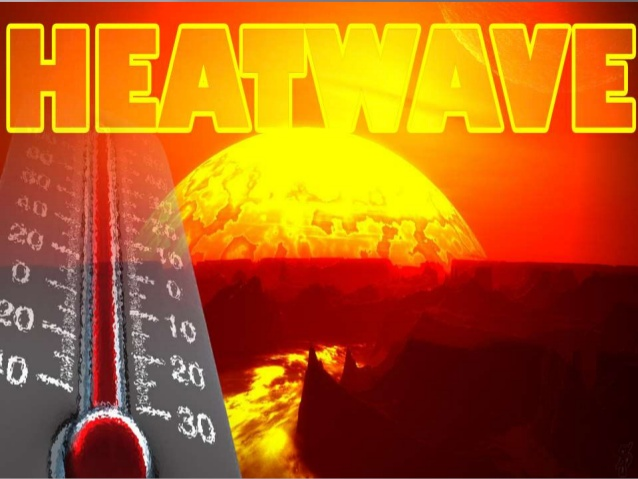

Weather and Climate App
အပူလႈိင္း

ျမန္မာႏိုင္ငံအလယ္ပိုင္းမိုးနည္းရပ္ဝန္းေဒသတြင္ဧၿပီ၊ေမလမ်ား၌အျဖစ္မ်ားပါသည္။တစ္ခါတစ္ရံ
အိႏၵိယႏိုင္ငံတြင္ျဖစ္ေပၚတတ္ေလ့ရွိသည့္ကာလၾကာရွည္သည့္အပူလႈိင္း၏သက္ေရာက္မႈေၾကာင့္
လည္းျမန္မာႏိုင္ငံအေနာက္ပိုင္းေဒသမ်ားတြင္ျဖစ္ေပၚတတ္ေလ့ရွိပါသည္။အထူးသျဖင့္ရာသီဥတု
ေဖာက္ျပန္တတ္သည့္အားေကာင္းေသာအယ္နီၫိုႏွစ္မ်ား၊အင္ဆိုႏွစ္မ်ားတြင္ပို၍အျဖစ္မ်ားတတ္ကာ
၁၉၉၈ခုႏွစ္ေမလအတြင္းျဖစ္ေပၚခဲ့ေသာအပူခ်ိန္စံခ်ိန္တင္ျမင့္တက္ခဲ့မႈမ်ားသည္ျမန္မာႏိုင္ငံအလယ္
ပိုင္းေဒသမ်ားေျမလတ္ပိုင္းေဒသမ်ားႏွင့္ျမစ္ဝကၽြန္းေပၚေဒသမ်ားတြင္အပူခ်ိန္ျမင့္တက္မႈမ်ားျဖစ္ေပၚခဲ့
ပါသည္။အပူလႈိင္းမ်ား၏သက္ေရာက္မႈေၾကာင့္က်န္းမာေရးက႑၊ေရသယံဇာတစီမံခန္႔ခြဲမႈက႑၊
စိုက္ပ်ိဳးေရးႏွင့္သီးႏွံထုတ္လုပ္မႈက႑မ်ားတြင္ထိခိုက္မႈရွိႏိုင္၍အမ်ားျပည္သူအားႀကိဳတင္ကာကြယ္ရန္
နည္းလမ္းမ်ား၊သတင္းသတိေပးခ်က္မ်ား၊အသိပညာေပးျခင္းမ်ားေဆာင္႐ြက္ရမည္ျဖစ္ၿပီး၊သက္ဆိုင္ရာ
အဖြဲ႕အစည္းမ်ားမွလည္းရာသီဥတုခန္႔မွန္းခ်က္မ်ားကိုအသုံးခ်၍ႀကိဳတင္ျပင္ဆင္ေဆာင္႐ြက္ျခင္းမ်ားျပဳလုပ္
သင့္ပါသည္။
ဆက္သြားရန္
ေနာက္ျပန္သြားရန္
ေရွ့သို႔